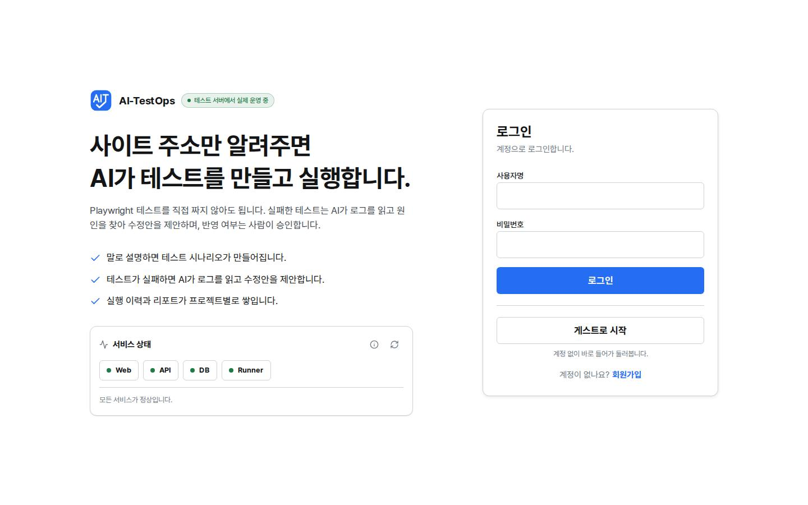
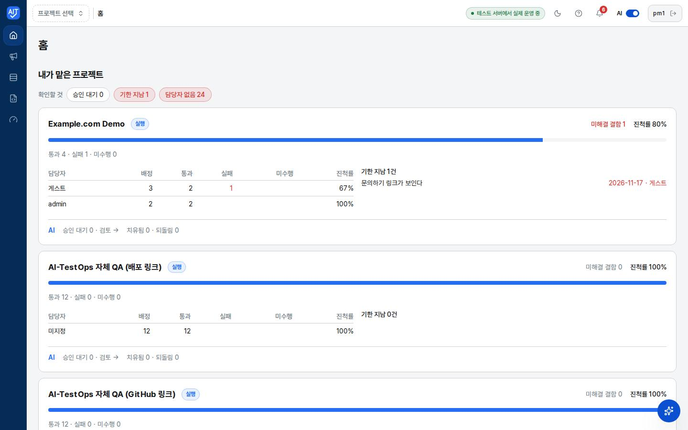
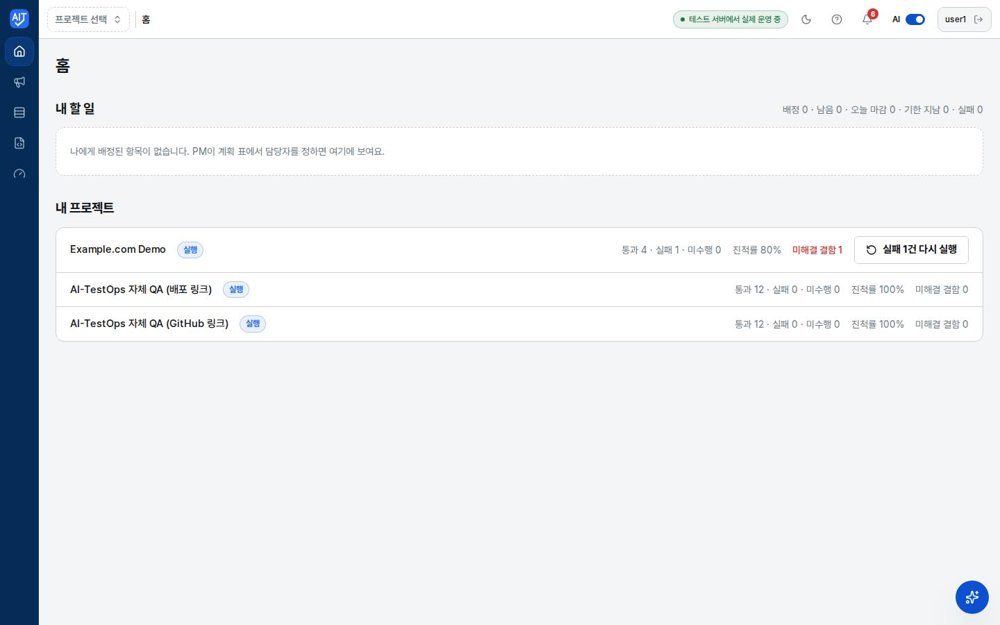
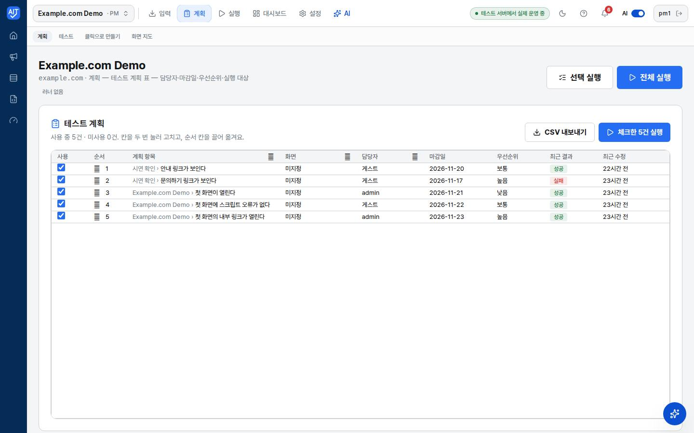
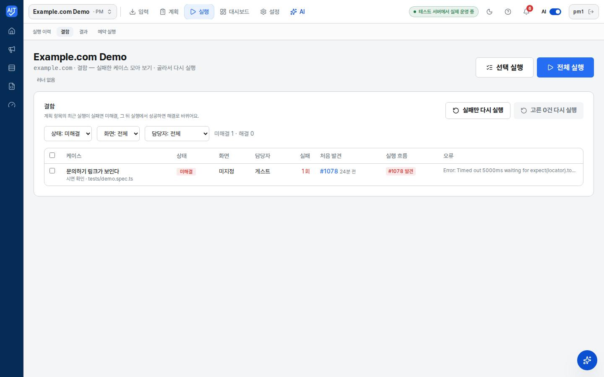
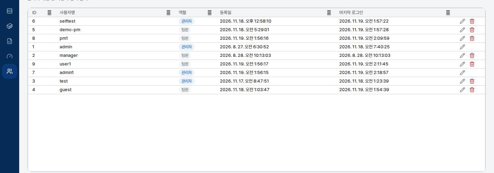

AI-TestOps 사용자 설명서
웹 사이트의 화면을 찾고, 테스트를 만들고, 돌리고, 실패를 AI와 함께 고치는 QA 플랫폼입니다.
1. 처음 시작하기
로그인하면 역할에 맞는 홈이 열립니다. 화면은 왼쪽 메뉴, 위쪽 프로젝트 메뉴, 그 아래 세부 탭으로 나뉩니다.

역할 세 가지
| 역할 | 할 수 있는 일 | 보지 못하는 것 |
|---|---|---|
| 관리자 | 모든 프로젝트 · 사용자 관리 · Runner · AI 설정 · 공지 관리 | — |
| PM | 맡은 프로젝트의 계획 · 실행 · 결함 다시 실행 · AI 수정 승인 · 팀원 지정 | 사용자 관리, AI 설정 |
| 팀원 | 배정된 케이스 확인 · 전체 실행 · 결함 다시 실행 · 결과 보기 | 케이스 고르기(선택 실행), 계획 수정, 승인 |
화면 구성
| 위치 | 내용 |
|---|---|
| 왼쪽 메뉴 | 홈 · 공지 · 프로젝트 · 템플릿 · Runner · (관리자) 사용자 관리 |
| 위쪽 프로젝트 메뉴 | 입력 · 계획 · 실행 · 대시보드 · 설정 · AI |
| 세부 탭 | 계획: 계획 · 테스트 · 클릭으로 만들기 · 화면 지도 / 실행: 실행 이력 · 결함 · 결과 · 예약 실행 / AI: AI로 만들기 · AI 분석 · AI 검토 |
| 오른쪽 위 | 운영 상태 · 다크 모드 · 도움말(이 설명서) · 알림 · AI 켜기/끄기 · 내 계정 |
2. 역할별 홈
같은 "홈"이지만 역할마다 먼저 볼 것이 다릅니다.
확인 필요 목록, 프로젝트 · 미수행 · 미해결 결함 · 승인 대기 · 러너 · AI 비용, 프로젝트 표, 사용자 · 러너
확인할 것(기한 지남 · 실패 · 승인 대기), 진척률 · 담당자별 현황, 위험한 프로젝트부터
나에게 배정된 케이스, 오늘 마감 · 기한 지남 · 실패, 한 번에 실행 · 다시 실행 · 결과 보기



3. 기본 사용법
프로젝트 하나를 등록해서 실패를 고치기까지의 순서입니다.
① 프로젝트 등록 관리자
- 프로젝트 목록에서 새 프로젝트를 누릅니다.
- 사이트 주소를 넣습니다. 테스트가 이 주소를 엽니다.
- 앱 소스가 GitHub에 있으면 소스 저장소 주소도 넣습니다. 코드에서 화면 구조를 읽습니다.
- PM을 고르면 그 사람이 프로젝트를 맡습니다. 팀원은 설정 → 팀원 탭에서 더합니다.
② 화면 찾기
입력에서 코드에서 화면 찾기(소스 저장소) 또는 주소로 화면 찾기(사이트를 직접 탐색)를 누릅니다. 결과는 계획 › 화면 지도에서 봅니다. 화면마다 테스트로 확인했는지, 아직 안 봤는지, 막혔는지가 색으로 보입니다.

③ 테스트 만들기
| 방법 | 위치 | 언제 쓰나 |
|---|---|---|
| 클릭으로 만들기 | 계획 › 클릭으로 만들기 | 사이트를 직접 눌러 가며 녹화. 코드를 몰라도 됩니다. |
| AI로 만들기 | AI › AI로 만들기 | "로그인하고 장바구니에 담는다" 같은 문장으로 테스트 생성. |
| 첫 테스트 자동 생성 | 프로젝트 등록 직후 | 사이트를 탐색해 기본 점검 테스트를 만들고 돌려 봅니다. |
| 코드 편집기 | 입력 › 코드 편집기 | Playwright 코드를 직접 고칩니다. AI 수정 도움도 여기 있습니다. |
④ 계획 세우기 PM
계획 › 계획 표에서 케이스마다 사용 여부, 담당자, 마감일, 우선순위를 정합니다. 마지막 판정(통과 · 실패 · 미수행)과 진척률이 함께 보입니다. 표 위의 CSV 내보내기로 엑셀에서 열 수 있습니다.

⑤ 실행하기
- 전체 실행: 사용으로 체크된 케이스를 모두 돌립니다.
- 선택 실행(PM): 케이스를 골라 묶어서 돌립니다.
- 예약 실행: 매일 · 요일별로 자동 실행합니다.
- 도는 동안 프로젝트 이름 아래에 테스트 실행 중 · 42초 경과 · 약 1분 남음이 보입니다. 남은 시간은 최근 같은 범위 실행 시간으로 잡고, 이력이 없으면 경과 시간만 보입니다. 멈추려면 실행 중지를 누릅니다.
⑥ 결과 · 결함 보기
실행 › 결함은 실패한 케이스를 모아 보여 줍니다(미해결 · 해결). 케이스를 누르면 실행 › 결과에서 단계별 실행 기록, 실패 시점 화면, 영상을 봅니다. 고친 뒤에는 결함 표에서 골라 다시 실행합니다. 통과하면 해결로 바뀝니다.


⑦ AI로 고치기 PM
- 실행이 실패하면 결과 화면에 수정 제안 카드가 생깁니다("이렇게 고칠까요?").
- 진행을 누르면 AI가 격리된 사본에서 고치고 다시 돌려 봅니다. 통과한 수정안만 올라옵니다.
- AI › AI 검토에서 바뀐 내용과 위험 표시를 보고 승인 및 적용 또는 거부합니다.
- 승인하면 파일에 반영되고 전체를 한 번 더 돌려 확인합니다(사후 검증). 다른 테스트가 깨지면 자동으로 되돌립니다.

⑧ AI 루프 (학습 루프)
실패한 실행 결과 화면 위쪽의 AI 루프 패널에서 실패의 원인(제품 결함 · 스크립트 오류 · 환경 · 불안정 · 미분류)과 과거 수정 N건 참고를 봅니다. PM은 AI 루프로 고치기로 아래 순서를 한 번에 돌립니다.
- 최대 3바퀴, 두 번 연속 진전이 없거나 예산을 다 쓰면 멈추고 사람에게 넘깁니다.
- 환경(네트워크 등) · 제품 결함은 테스트 코드로 고칠 일이 아니라 사람에게 넘깁니다.
- 사람이 승인한 수정은 기억돼서, 같은 실패가 다시 나면 "과거 수정 1건 참고"로 예시에 쓰입니다. 테스트할수록 똑똑해집니다.
⑨ 관리자 메뉴 관리자
| 메뉴 | 내용 |
|---|---|
| 사용자 관리 | 계정 만들기 · 역할 바꾸기 · 비밀번호 초기화 · 모든 기기에서 로그아웃 |
| Runner | 테스트를 돌리는 Docker 컨테이너 상태 · 동시 실행 수 |
| AI 설정 | AI 키 · 모델 · 단가 (관리자만) |
| 공지 | 공지 쓰기 · 고정 · 게시 기간 |

4. 사용자 흐름도
전체 흐름과 역할별로 하는 일입니다.
전체 흐름
테두리: AI가 하는 일 사람이 정하는 일
역할별 흐름
5. 용어 정리
| 용어 | 뜻 |
|---|---|
| 프로젝트 | 테스트할 사이트 하나. 사이트 주소와 (있으면) 소스 저장소를 가집니다. |
| 테스트 케이스 (케이스) | 확인할 일 하나. spec 파일 안의 test('...') 하나입니다. |
| spec 파일 | 케이스들이 들어 있는 Playwright 코드 파일 (tests/*.spec.ts). |
| 계획 표 | 케이스마다 사용 여부 · 담당자 · 마감일 · 우선순위 · 마지막 판정을 적는 표. |
| 실행 (실행 #n) | 러너가 브라우저로 케이스들을 한 번 돌린 것. |
| 판정 | 케이스의 결과: 미수행 · 통과 · 실패. 실행을 중지해도 이전 판정은 그대로입니다. |
| 진척률 | 사용으로 체크된 케이스 중 통과한 비율. |
| 결함 | 실패에서 생기는 추적 단위. 다시 실행해서 통과하면 해결. |
| 스위트 | 실행할 때 고르는 케이스 묶음. |
| 러너 (Runner) | 테스트를 돌리는 Docker 컨테이너. 일회용(실행마다 새로) 또는 상주. |
| 화면 지도 | 코드나 사이트 탐색으로 찾은 화면과 이동 경로. 테스트가 확인한 화면이 색으로 표시됩니다. |
| 수정 제안 | 실패에서 자동으로 만든 "이렇게 고칠까요?" 카드. 진행을 눌러야 AI가 고칩니다. |
| AI 검토 · 승인 대기 | AI가 만든 변경을 사람이 승인 · 거부하는 곳과 그 상태. |
| 격리 재검증 | AI가 프로젝트 파일이 아닌 사본에서 고치고 다시 돌려 통과를 확인하는 것. |
| 사후 검증 | 승인으로 반영된 뒤 전체를 다시 돌려 다른 테스트가 깨지지 않았는지 보는 것. 깨지면 자동으로 되돌립니다. |
| 위험 표시 | 검증을 줄이거나 실제 사이트를 건너뛰는 등 조심해서 볼 변경에 붙는 표시. |
| 원인 | 실패의 이유: 제품 결함(사이트가 기대와 다름) · 스크립트 오류(테스트 코드 문제) · 환경(네트워크 · 브라우저) · 불안정(통과 · 실패를 오감) · 미분류. 판정이 아닙니다. |
| AI 루프 (학습 루프) | 분류 → 과거 수정 참고 → 격리 수정 → 승인 → 다시 실행을 자동으로 반복하는 기능. |
| 과거 수정 N건 참고 | 같은 · 비슷한 실패에서 사람이 승인했던 수정 수. 루프가 예시로 씁니다. |
6. 자주 묻는 질문
아니요. AI가 만든 변경은 모두 AI › AI 검토에서 사람이 승인해야 반영됩니다.
도는 중이면 돌아가는 원과 "경과 · 약 n분 남음"이, 사람 차례(승인 대기)면 모래시계가 보입니다.
아니요. 중지된 실행은 판정을 바꾸지 않습니다.
케이스 고르기는 PM의 일입니다. 팀원은 전체 실행 · 결함 다시 실행 · 계획 표 실행을 씁니다.
사이트에 닿지 못했거나 브라우저가 뜨지 않은 경우입니다. 테스트 코드 문제가 아니므로 네트워크 · 러너 상태를 먼저 확인하세요.
7. 자체 QA 예시
AI-TestOps로 AI-TestOps 자신을 테스트한 예입니다 (배포 링크 · GitHub 링크 프로젝트, 관리자 · PM · 팀원 시나리오 9개).
| 역할 | 시나리오 |
|---|---|
| 관리자 | 홈에서 전체 현황 보기 · 사용자 관리에서 계정 찾기 · Runner 관리 열기 |
| PM | 홈에서 맡은 프로젝트 보기 · 계획 표와 선택 실행 버튼 · 사용자 관리는 열리지 않음 |
| 팀원 | 홈에서 내 할 일 보기 · 계획 표는 보이고 선택 실행은 없음 · 사용자 관리는 열리지 않음 |